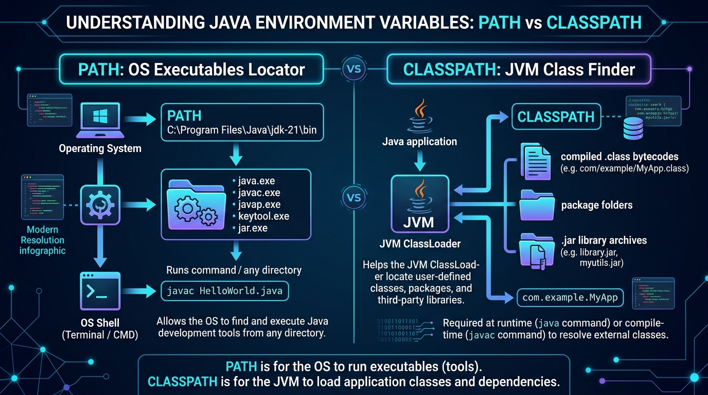

Demystify the critical distinction between the OS-level PATH and the JVM-level CLASSPATH to resolve ClassNotFoundException forever.

Java is a cross-platform language with a two-tier execution model: the Operating System runs native tools, and the Java Virtual Machine (JVM) executes platform-independent bytecode.
| Feature | PATH (OS Level) | CLASSPATH (JVM Level) |
|---|---|---|
| Who uses it? | The Operating System shell (CMD, PowerShell, Bash). | The JVM and Java compiler (javac / java). |
| What does it locate? | Executable native binary files (java.exe, javac.exe). |
Compiled .class files, packages, and .jar archives. |
| Typical Value | C:\Program Files\Java\jdk-21\bin |
.;bin;lib/gst-calculator.jar |
| Common Error if Missing | 'javac' is not recognized as an internal or external command |
Error: Could not find or load main class / ClassNotFoundException |
When your application requests class in.gov.gst.tax.GstFilingEngine, the JVM traverses entries in the CLASSPATH in order from left to right:
.) Current DirectoryBy default, Java looks in the current working directory. However, if you set an explicit CLASSPATH environment variable, the current directory is lost unless you include .!
A .jar file is just a zipped package folder. To include it, you must explicitly point to the JAR file itself: -cp "bin;lib/gst-rules.jar".
-cp (Indian GST Example)
Suppose an Indian corporate billing application depends on a third-party GST compliance library stored in lib/gst-rules.jar:
package in.gov.gst.tax;
// Class imported from external lib/gst-rules.jar:
import com.cleartax.engine.GstCalculator;
public class GstInvoiceApp {
public static void main(String[] args) {
double invoiceAmount = 50000.00; // ₹ 50,000 INR
double cgst = invoiceAmount * 0.09; // 9% Central GST
double sgst = invoiceAmount * 0.09; // 9% State GST
double total = invoiceAmount + cgst + sgst;
System.out.println("🇮🇳 Indian GST Tax Invoice Generated");
System.out.println("Base Amount: ₹ " + invoiceAmount);
System.out.println("CGST (9%): ₹ " + cgst);
System.out.println("SGST (9%): ₹ " + sgst);
System.out.println("Total Due: ₹ " + total);
}
};): -cp "bin;lib/gst.jar":): -cp "bin:lib/gst.jar"
javac, java)..class files and .jar libraries).-cp flag to keep dependencies isolated and reproducible.